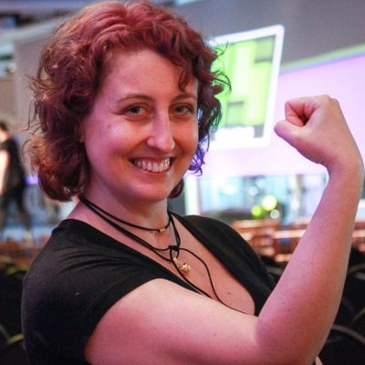

Front in POA 2017
16 de Dez
• Senac-RS
Te inscreve!
Sobre
Local
Patrocínio
Código de Conduta
Você não pode
perder o
Front in POA!
Inscreva-se
Palestrantes
Cynthia Zanoni
@cynthiazanoni
Vanessa Tonini
@vanessametonini

Aline Bastos
@alinebastos
Local do
Front in POA
Auditório do SENAC
Rua Cel. Genuíno, 130 • Centro
Porto Alegre
•
RS
90010-350
Ver no mapa
Patrocínio
Seja um PATROCINADOR
Apoio
Curadores do
Front in POA
Felipe N. Moura
@felipenmoura
Jaydson Gomes
@jaydson